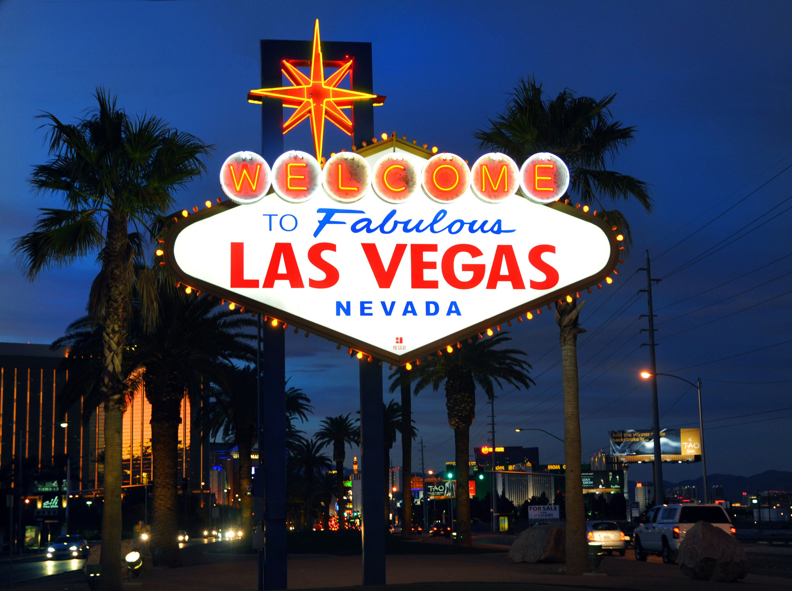

Cities I like to visit
Being in the USA, I got a chance to be able to visit few places I always wanted to go. Below are some of the cities I would really love to visit.
-
Niagara Falls, Canada
In most of the Indian films, there would be a clip shot in Niagara Falls which always peaked my interest to visit. I would like to experience the falls first hand whenever I get a chance.
Rating: Yet to visit :P
-
Washington D.C.
I would like to visit Washington D.C. because it is the capital of the USA.
Rating: Yet to visit :P -
Grand Canyon, Arizona
Looking at the pictures clicked by my friend, I was surprised to see the grand canyon. I would love to see breathtaking views and hike through one of the world's natural wonders.
Rating: Yet to visit :P
-

Las Vegas, Nevada
I want to experience the night life in Las Vegas. i heard very much about it in the James Bond movies and I would love to visit the casinos, and vibrant nightlife.
Rating: Yet to visit :P